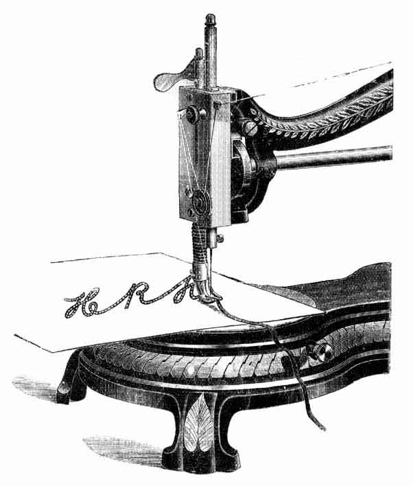
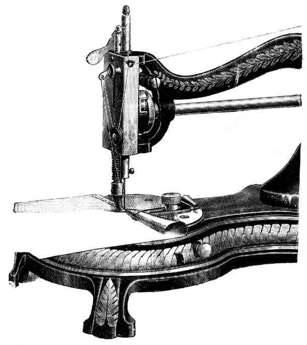
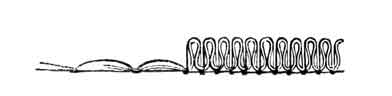
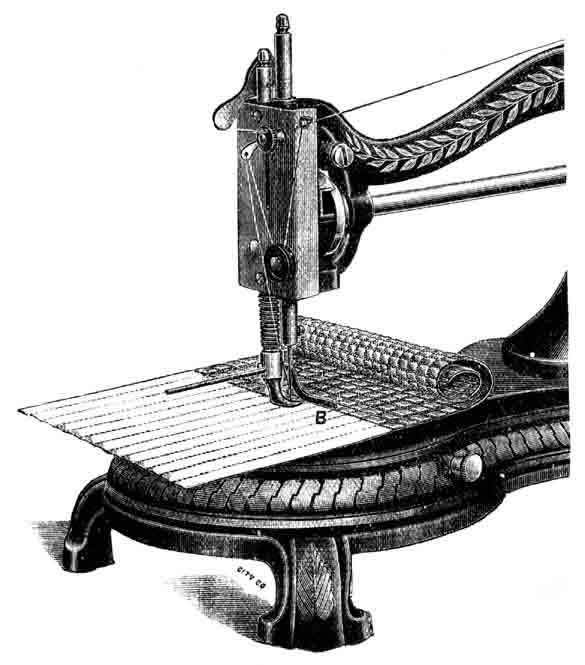
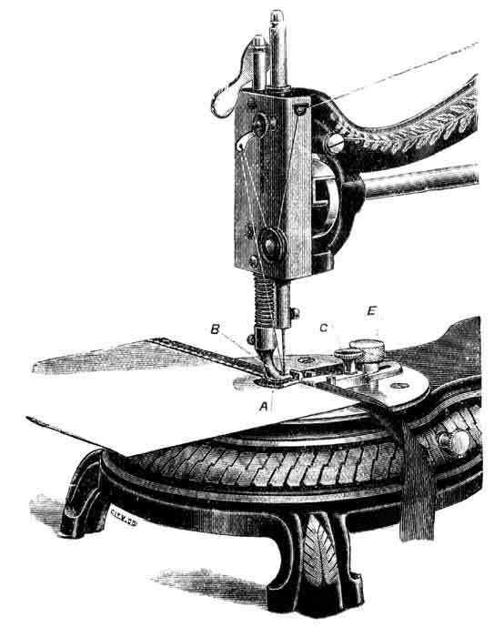
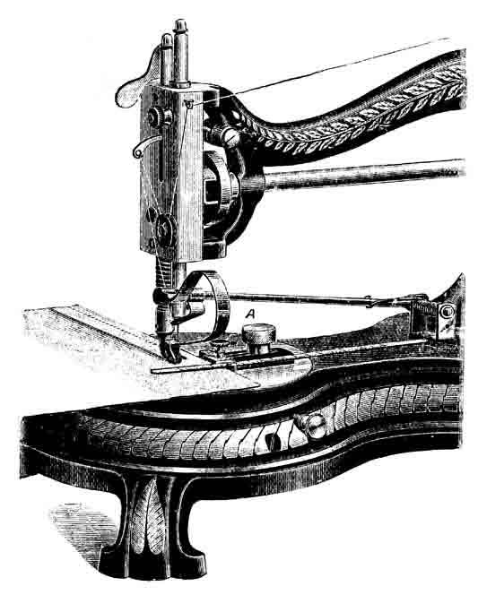

INSTRUCTIONS FOR OPERATING THE
HAND
SEWING MACHINE
~~~~~~~~~~~~~~~~~~~~~~~~~~~~~~~~
Jones' Sewing Machine Co. Limited,
GUIDE BRIDGE,
Near Manchester.
| 1 BRAIDER 1 DOUBLE HEMMER for narrow and wide hems. 1 QUILTER 1 STRAIGHT GUIDE 1 SCREW for STRAIGHT GUIDE |
4 SHUTTLE BOBBINS 4 NEEDLES 1 LARGE SCREW DRIVER 1 SMALL SCREW DRIVER 1 OIL CAN FILLED WITH OIL 1 BOOK OF INSTRUCTIONS |

THE BRAIDER
Thread the braid through the braid hole in presser-foot, in front of needle, passing it out under the needle as above. Thus any design of plain or ornamental braiding may be wrought with the braid without trouble or difficulty.
The braid may be passed very easily through the hole in presser foot, by first doubling a piece of cotton, and pass it through the hole, and put the end of braid into it so that you may draw the braid through the hole in foot at once.

THE HEMMER
Secure Hemmer firmly to the Cloth Plate, with the Thumb Screw, as per illustration. Raise the needle and presser foot, and turn the edge of the cloth, as shown; put it into the hemmer, and draw it along to the needle; lower the presser-foot and commence to sew. Hold the edge of the material between the right-hand thumb and finger, and allow it to curl into the hemmer as shown, being careful not to more than half fill the large end of hemmer, or it will pass out at the small end near the needle.

To Gather, make a long stitch with loose tension, so that the lower thread will not be drawn into the fabric, but be upon the lower surface. Gather by drawing up this lower thread, which should be a size coarser than the upper thread.

THE QUILTER
This admirable little appliance enables the operator to get a greater bulk of material through the machine, which could not possibly be attained by any other method. It is also more easily attached, and possesses the important advantages that it will not move from its position whilst at work, and the operator can put in and take out the work with the greatest ease.
This Quilting Gauge is simply placed into hole in the presser-bar as illustrated, and secured by the small screw shown. It may be adjusted to any required size of square or diamond, care being taken that the guide B is nearly resting on the work, and set at a proper distance from the needle.

THE BINDER, extra
Raise the Presser-foot and secure the Binder firmly to the Cloth Plate by Thumb Screw E, as per illustration, with the spring A to work under the presser foot B. Adjust the two plates to width of binding by screw C; curl the binding into the clips on the end of plates. Seeing that it will pass through freely, insert the edge of the material to be bound between the clips, with the end directly under the needle; lower the presser-foot and commence to work.
If the needle misses sewing the binding on the top side, bring forward plate by screw C, and same with bottom plate if it misses on the underside.
If it misses on both sides, bring the binder forward altogether by thumb-screw E, taking care that the needle will pass freely through the slot in spring A under the presser-foot.

TUCK CREASER, extra
Secure the Tuck creaser in a similar manner to the Binder, hook the small plate that slides on the long wire round the needle, and the guide A fixed to the distance required for the tuck. Proceed as in sewing; one tuck will then be sewn, and the distance for the next creased by the hooked part of the spring striking on raised edge. Remove the work and fold it in the crease. Place the folded edge against guide at A, and proceed to sew. Thus each tuck will be exact without any time or trouble being spent in measuring and adjusting material.
________________________________________________________________________________________________________________________
IF THE MACHINE RUNS HEAVY, OIL IT WELL WITH PARAFFIN OIL, run the Machine at a quick speed for a few minutes, then clean the Paraffin Oil off, and oil the Machine well with GOOD SPERM OIL.